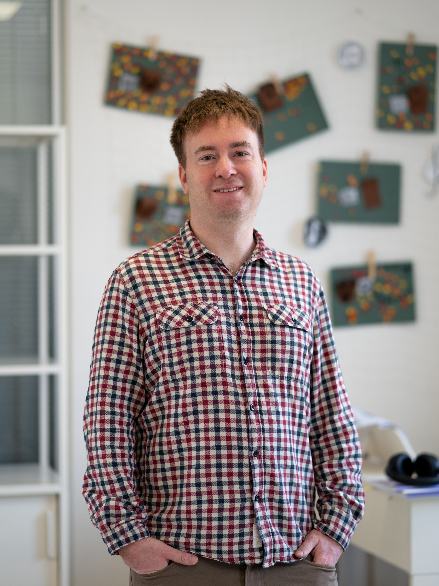
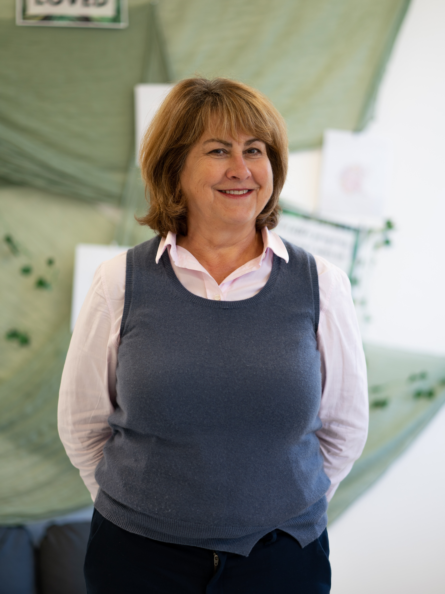

Ředitel školy

Zakladatel školy

Spoluzakladatelka, metodik & tvůrce obsahu

učitel ICT

Native Speaker & English Teacher

Native Speaker & Head of EN Language

Asistentka a vychovatelka

logopedka

Speciální pedagožka

Třídní učitelka

Třídní učitelka

Učitel TV

English Teacher

Asistenka pro první stupeň

Asistentka a vychovatelka
Menu
Kontakt
Kontaktní informace
Roh Přívozní 1064/2a a Jankovcovy 53
Praha 7 - Holešovice
IČ: 08916403
Red IZO: 691016054 / IZO: 181129167
Datová schránka: uf3q7m6
Dejte nám vědět
Pro obecné informace
info@skolaflow.czKontakt na pověřence GDPR:
gdpr@skolaflow.czInfolinka (Po-St, Pá: 9–12)
+420 770 673 828